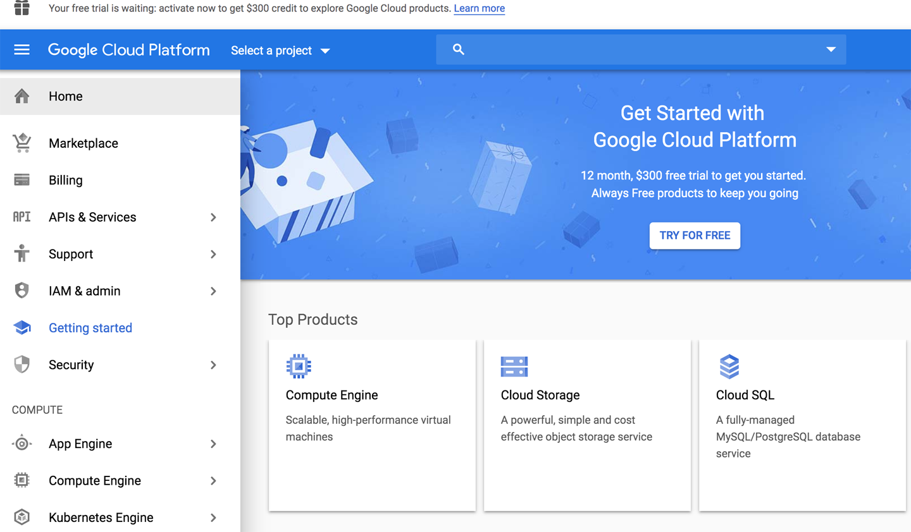
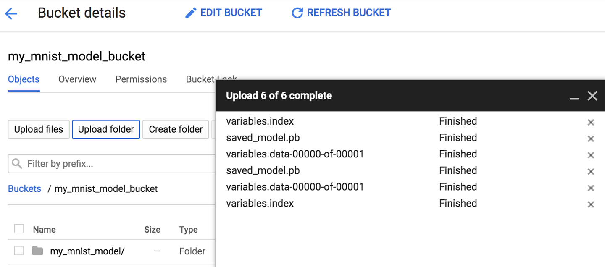
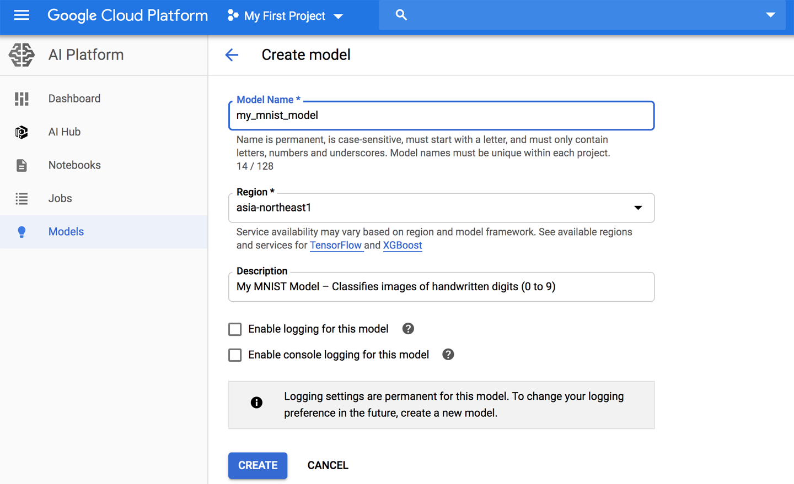

Chapter 19. Training and Deploying TensorFlow Models at Scale
Once you have a beautiful model that makes amazing predictions, what do you do with it? Well, you need to put it in production! This could be as simple as running the model on a batch of data and perhaps writing a script that runs this model every night. However, it is often much more involved. Various parts of your infrastructure may need to use this model on live data, in which case you probably want to wrap your model in a webservice: this way, any part of your infrastructure can query your model at any time using a simple REST API (or some other protocol), as we discussed in Chapter 2. But as time passes, you need to regularly retrain your model on fresh data and push the updated version to production. You must handle model versioning, gracefully transition from one model to the next, possibly roll back to the previous model in case of problems, and perhaps run multiple different models in parallel to perform A/B experiments.1 If your product becomes successful, your service may start to get plenty of queries per second (QPS), and it must scale up to support the load. A great solution to scape up your service, as we will see in this chapter, is to use TF Serving, either on your own hardware infrastructure or via a cloud service such as Google Cloud AI Platform. It will take care of efficiently serving your model, handle graceful model transitions, and more. If you use the cloud platform, you will also get many extra features, such as powerful monitoring tools.
Moreover, if you have a lot of training data, and compute-intensive models, then training time may be prohibitively long. If your product needs to adapt to changes quickly, then a long training time can be a show-stopper (e.g., think of a news recommendation system promoting news from last week). Perhaps even more importantly, a long training time will prevent you from experimenting with new ideas. In Machine Learning (as in many other fields), it is hard to know in advance which ideas will work, so you should try out as many as possible, as fast as possible. One way to speed up training is to use hardware accelerators such as GPUs or TPUs. To go even faster, you can train a model across multiple machines, each equipped with multiple hardware accelerators. TensorFlow’s simple yet powerful Distribution Strategies API makes this easy, as we will see.
In this chapter we will look at how to deploy models, first to TF Serving, then to Google Cloud AI Platform. We will also take a quick look at deploying models to mobile apps, embedded devices, and web apps. Lastly, we will discuss how to speed up computations using GPUs and how to train models across multiple devices and servers using the Distribution Strategies API. That’s a lot of topics to discuss, so let’s get started!
Serving a TensorFlow Model
Once you have trained a TensorFlow model, you can easily use it in any Python code: if it’s a tf.keras model, just call its predict() method! But as your infrastructure grows, there comes a point where it is preferable to wrap your model in a small service whose sole role is to make predictions and have the rest of the infrastructure query it (e.g., via a REST or gRPC API).2 This decouples your model from the rest of the infrastructure, making it possible to easily switch model versions or scale the service up as needed (independently from the rest of your infrastructure), perform A/B experiments easily, ensure that all your software components rely on the same model versions, simplify testing and development, and more. You could create your own microservice using any technology you want (e.g., using the Flask library), but why reinvent the wheel when you can just use TF Serving?
Using TensorFlow Serving
TF Serving is a very efficient, battle-tested model server that’s written in C++. It can sustain a high load, serve multiple versions of your models, automatically watch a model repository to deploy the latest version of your models, and more (see Figure 19-1).
Figure 19-1. TF Serving can serve multiple models and automatically deploy the latest version of each model
So let’s suppose you have trained an MNIST model using tf.keras, and you want to deploy it to TF Serving. The first thing you have to do is export this model to TensorFlow’s SavedModel format.
Exporting SavedModels
TensorFlow provides a simple tf.saved_model.save() function to export models to the SavedModel format. All you need to do is give it the model, specify the model’s name and version number, and that’s it! The function will save the model’s computation graph and its weights:
model=keras.models.Sequential([...])model.compile([...])history=model.fit([...])model_version="0001"model_name="my_mnist_model"model_path=os.path.join(model_name,model_version)tf.saved_model.save(model,model_path)
It’s usually a good idea to include all preprocessing layers in the final model you export so that it can ingest data in its natural form once it is deployed to production. This avoids having to take care of preprocessing separately within the application that uses the model. Bundling the preprocessing steps within the model also makes it simpler to update them later on and limits the risk of mismatch between a model and the preprocessing steps it requires.
Warning
Since a SavedModel saves the computation graph, it can only be used with models that are based exclusively on TensorFlow operations, excluding the tf.py_function() operation (which wraps arbitrary Python code). It also excludes dynamic tf.keras models (see Appendix G), since these models cannot be converted to computation graphs. Dynamic models need to be served using other tools (e.g., Flask).
A SavedModel represents a version of your model. It is stored as a directory containing a saved_model.pb file, which defines the computation graph (represented as a serialized Protocol Buffer), and a variables subdirectory containing the variable values. For models containing a large number of weights, these variable values may be split across multiple files. A SavedModel also includes an assets subdirectory that may contain additional data, such as vocabulary files, class names, or some example instances for this model (in the following example, we don’t use assets):
my_mnist_model
└── 0001
├── assets
├── saved_model.pb
└── variables
├── variables.data-00000-of-00001
└── variables.index
As you might expect, you can load a SavedModel using the tf.saved_model.load() function. However, the returned object is not a Keras model: it represents the SavedModel, including its computation graph and variable values. You can use it like a function, and it will make predictions (make sure to pass the inputs as tensors, and you must also set the training argument, generally to False):
saved_model=tf.saved_model.load(model_path)y_pred=saved_model(X_new,training=False)
Alternatively, you can wrap this SavedModel’s prediction function in a Keras model:
inputs=keras.layers.Input(shape=...)outputs=saved_model(inputs,training=False)model=keras.models.Model(inputs=[inputs],outputs=[outputs])y_pred=model.predict(X_new)
TensorFlow also comes with a small saved_model_cli command-line tool to inspect SavedModels:
$export ML_PATH="$HOME/ml"# point to this project, wherever it is$cd $ML_PATH$saved_model_cli show --dir my_mnist_model/0001 --allMetaGraphDef with tag-set: 'serve' contains the following SignatureDefs:signature_def['__saved_model_init_op']:[...]signature_def['serving_default']:The given SavedModel SignatureDef contains the following input(s):inputs['flatten_input'] tensor_info:dtype: DT_FLOATshape: (-1, 28, 28)name: serving_default_flatten_input:0The given SavedModel SignatureDef contains the following output(s):outputs['dense_1'] tensor_info:dtype: DT_FLOATshape: (-1, 10)name: StatefulPartitionedCall:0Method name is: tensorflow/serving/predict
A SavedModel contains one or more metagraphs. A metagraph is a computation graph plus some function signature definitions (including their input and output names, types, and shapes). Each metagraph is identified by a set of tags. For example, you may want to have a metagraph containing the full computation graph, including the training operations (this one may be tagged "train", for example), and another metagraph containing a pruned computation graph with only the prediction operations, including some GPU-specific operations (this metagraph may be tagged "serve", "gpu"). However, when you pass a tf.keras model to the tf.saved_model.save() function, by default the function saves a much simpler SavedModel: it saves a single metagraph tagged "serve", which contains two signature definitions, an initialization function (called "__saved_model_init_op", which you do not need to worry about) and a default serving function (called serving_default). When saving a tf.keras model, the default serving function corresponds to the model’s call() function, which of course makes predictions.
The saved_model_cli tool can also be used to make predictions (for testing, not really for production). Suppose you have a NumPy array (X_new) containing three images of handwritten digits that you want to make predictions for. You first need to export them to NumPy’s npy format:
np.save("my_mnist_tests.npy",X_new)
Next, use the saved_model_cli command like this:
$saved_model_cli run --dir my_mnist_model/0001 --tag_set serve\--signature_def serving_default\--inputs flatten_input=my_mnist_tests.npy[...] Result for output key dense_1:[[1.1739199e-04 1.1239604e-07 6.0210604e-04 [...] 3.9471846e-04][1.2294615e-03 2.9207937e-05 9.8599273e-01 [...] 1.1113169e-07][6.4066830e-05 9.6359509e-01 9.0598064e-03 [...] 4.2495009e-04]]
The tool’s output contains the 10 class probabilities of each of the 3 instances. Great! Now that you have a working SavedModel, the next step is to install TF Serving.
Installing TensorFlow Serving
There are many ways to install TF Serving: using a Docker image,3 using the system’s package manager, installing from source, and more. Let’s use the Docker option, which is highly recommended by the TensorFlow team, as it is simple to install, it will not mess with your system, and it offers high performance. You first need to install Docker. Then download the official TF Serving Docker image:
$docker pull tensorflow/serving
Now you can create a Docker container to run this image:
$docker run -it --rm -p 8500:8500 -p 8501:8501\-v "$ML_PATH/my_mnist_model:/models/my_mnist_model"\-e MODEL_NAME=my_mnist_model\tensorflow/serving[...]2019-06-01 [...] loaded servable version {name: my_mnist_model version: 1}2019-06-01 [...] Running gRPC ModelServer at 0.0.0.0:8500 ...2019-06-01 [...] Exporting HTTP/REST API at:localhost:8501 ...[evhttp_server.cc : 237] RAW: Entering the event loop ...
That’s it! TF Serving is running. It loaded our MNIST model version 1, and it is serving it both through gRPC (on port 8500) and REST (on port 8501). Here is what all the command-line options mean:
-
-it:: Makes the container interactive (so you can press Ctrl-C to stop it) and displays the server’s output. -
--rm:: Deletes the container when you stop it (no need to clutter your machine with interrupted containers). However, it does not delete the image. -
-p 8500:8500:: Makes the Docker engine forward the host’s TCP port 8500 to the container’s TCP port 8500. By default, TF Serving uses this port to serve the gRPC API. -
-p 8501:8501:: Forwards the hosts TCP port 8501 to the container’s TCP port 8501. By default, TF Serving uses it to serve the REST API. -
-v "$ML_PATH/my_mnist_model:/models/my_mnist_model":: Makes the host’s$ML_PATH/my_mnist_modeldirectory available to the container at the path /models/mnist_model. On Windows, you may need to replace/with\in the host path (but not in the container path). -
-e MODEL_NAME=my_mnist_model:: Sets the container’sMODEL_NAMEenvironment variable, so TF Serving knows which model to serve. By default, it will look for models in the /models directory, and it will automatically serve the latest version it finds. -
tensorflow/serving:: This is the name of the image to run.
Now let’s go back to Python and query this server, first using the REST API, then the gRPC API.
Querying TF Serving Through the REST API
Let’s start by creating the query. It must contain the name of the function signature you want to call, and of course the input data:
importjsoninput_data_json=json.dumps({"signature_name":"serving_default","instances":X_new.tolist(),})
Note that the JSON format is 100% text-based, so the X_new NumPy array had to be converted to a Python list and then formatted as JSON:
>>>input_data_json'{"signature_name": "serving_default", "instances": [[[0.0, 0.0, 0.0, [...]0.3294117647058824, 0.725490196078431, [...very long], 0.0, 0.0, 0.0, 0.0]]]}'
Now let’s send the input data to TF Serving by sending an HTTP POST request. This can be done easily using the requests library (it is not part of Python’s standard library, so you will need to install it first, e.g., using pip):
importrequestsSERVER_URL='http://localhost:8501/v1/models/my_mnist_model:predict'response=requests.post(SERVER_URL,data=input_data_json)response.raise_for_status()# raise an exception in case of errorresponse=response.json()
The response is a dictionary containing a single "predictions" key. The corresponding value is the list of predictions. This list is a Python list, so let’s convert it to a NumPy array and round the floats it contains to the second decimal:
>>>y_proba=np.array(response["predictions"])>>>y_proba.round(2)array([[0. , 0. , 0. , 0. , 0. , 0. , 0. , 1. , 0. , 0. ],[0. , 0. , 0.99, 0.01, 0. , 0. , 0. , 0. , 0. , 0. ],[0. , 0.96, 0.01, 0. , 0. , 0. , 0. , 0.01, 0.01, 0. ]])
Hurray, we have the predictions! The model is close to 100% confident that the first image is a 7, it is 99% confident that the second image is a 2, and 96% confident that the third image is a 1.
The REST API is nice and simple, and it works well when the input and output data are not too large. Moreover, just about any client application can make REST queries without additional dependencies, whereas other protocols are not always so readily available. However, it is based on JSON, which is text-based and fairly verbose. For example, we had to convert the NumPy array to a Python list, and every float ended up represented as a string. This is very inefficient, both in terms of serialization/deserialization time (to convert all the floats to strings and back) and also in terms of payload size: many floats end up being represented using over 15 characters, which translates to over 120 bits for 32-bit floats! This will result in high latency and bandwidth usage when transferring large NumPy arrays.4 So let’s use gRPC instead.
Tip
When transferring large amounts of data, it is much better to use the gRPC API (if the client supports it), as it is based on a compact binary format and on an efficient communication protocol (based on HTTP/2 framing).
Querying TF Serving Through the gRPC API
The gRPC API expects a serialized PredictRequest Protocol Buffer as input, and it outputs a serialized PredictResponse Protocol Buffer. These protos are part of the tensorflow-serving-api library, which you must install (e.g., using pip). So first let’s create the request:
fromtensorflow_serving.apis.predict_pb2importPredictRequestrequest=PredictRequest()request.model_spec.name=model_namerequest.model_spec.signature_name="serving_default"input_name=model.input_names[0]request.inputs[input_name].CopyFrom(tf.make_tensor_proto(X_new))
The code creates a PredictRequest Protocol Buffer and fills in the required fields, including the model name (defined earlier), the signature name of the function we want to call, and finally the input data, in the form of a Tensor Protocol Buffer. The tf.make_tensor_proto() function creates a Tensor Protocol Buffer based on the given tensor or NumPy array, in this case X_new.
Next, you send the request to the server and get its response (for this, you will need the grpcio library, which you can install using pip):
importgrpcfromtensorflow_serving.apisimportprediction_service_pb2_grpcchannel=grpc.insecure_channel('localhost:8500')predict_service=prediction_service_pb2_grpc.PredictionServiceStub(channel)response=predict_service.Predict(request,timeout=10.0)
The code is quite straightforward: after the imports, we create a gRPC communication channel to localhost on TCP port 8500, then we create a gRPC service over this channel, and we use it to send a request, with a 10-second timeout (not that the call is synchronous: it will block until it receives the response or the timeout period expires). In this example the channel is insecure (no encryption, no authentication), but gRPC and TensorFlow Serving also support secure channels over SSL/TLS.
Next, let’s convert the PredictResponse Protocol Buffer to a tensor:
output_name=model.output_names[0]outputs_proto=response.outputs[output_name]y_proba=tf.make_ndarray(outputs_proto)
If you run this code and print y_proba.numpy().round(2), you will get the exact same estimated class probabilities as earlier. And that’s all there is to it: in just a few lines of code, you can now access your TensorFlow model remotely, either using REST or gRPC.
Deploying a new model version
Now let’s create a new model version and export a SavedModel to the my_mnist_model/0002 directory, just like earlier:
model=keras.models.Sequential([...])model.compile([...])history=model.fit([...])model_version="0002"model_name="my_mnist_model"model_path=os.path.join(model_name,model_version)tf.saved_model.save(model,model_path)
At regular intervals (the delay is configurable), TensorFlow Serving checks for new model versions. If it finds one, it will automatically handle the transition gracefully: by default, it will answer pending requests (if any) with the previous model version, while handling new requests with the new version.5 As soon as every pending request has been answered, the previous model version is unloaded. You can see this at work in the TensorFlow Serving logs:
[...]reservedresourcestoloadservable{name:my_mnist_modelversion:2}[...]ReadingSavedModelfrom:/models/my_mnist_model/0002Readingmetagraphwithtags{serve}Successfullyloadedservableversion{name:my_mnist_modelversion:2}Quiescingservableversion{name:my_mnist_modelversion:1}Donequiescingservableversion{name:my_mnist_modelversion:1}Unloadingservableversion{name:my_mnist_modelversion:1}
This approach offers a smooth transition, but it may use too much RAM (especially GPU RAM, which is generally the most limited). In this case, you can configure TF Serving so that it handles all pending requests with the previous model version and unloads it before loading and using the new model version. This configuration will avoid having two model versions loaded at the same time, but the service will be unavailable for a short period.
As you can see, TF Serving makes it quite simple to deploy new models. Moreover, if you discover that version 2 does not work as well as you expected, then rolling back to version 1 is as simple as removing the my_mnist_model/0002 directory.
Tip
Another great feature of TF Serving is its automatic batching capability, which you can activate using the --enable_batching option upon startup. When TF Serving receives multiple requests within a short period of time (the delay is configurable), it will automatically batch them together before using the model. This offers a significant performance boost by leveraging the power of the GPU. Once the model returns the predictions, TF Serving dispatches each prediction to the right client. You can trade a bit of latency for a greater throughput by increasing the batching delay (see the --batching_parameters_file option).
If you expect to get many queries per second, you will want to deploy TF Serving on multiple servers and load balance the queries (see Figure 19-2). This will require deploying and managing many TF Serving containers across these servers. One way to handle that is to use an orchestration tool such as Kubernetes, which is an open source system for simplifying container orchestration across many servers. If you do not want to purchase, maintain, and upgrade all the hardware infrastructure, you will want to use virtual machines on cloud platforms such as Amazon AWS, Microsoft Azure, Google Cloud Platform, IBM Cloud, Alibaba Cloud, Oracle Cloud, or other Platform-as-a-Service (PaaS). Managing all the virtual machines, handling container orchestration (even with the help of Kubernetes), taking care of TF Serving configuration, tuning and monitoring—all of this can be a full-time job. Fortunately, some service providers can take care of this for you. In this chapter we will use Google Cloud AI Platform because it’s the only platform with TPUs today, it supports TensorFlow 2, it offers a nice suite of AI services (e.g., AutoML, Vision API, Natural Language API), and it is the one I have the most experience with. But there are several other providers in this space, such as Amazon AWS SageMaker and Microsoft AI Platform, which are also capable of serving TensorFlow models.
Figure 19-2. Scaling up TF Serving with load balancing
Now let’s see how to serve our wonderful MNIST model on the cloud!
Creating a Prediction Service on GCP AI Platform
Before you can deploy a model, there’s a little bit of setup to take care of:
-
Log in to your Google account, and then go to the Google Cloud Platform (GCP) console (see Figure 19-3). If you don’t have a Google account, you’ll have to create one.
-
If it is your first time using GCP, you will have to read and accept the terms and conditions. Click Tour Console if you want. At the time of this writing, new users are offered a free trial, including $300 worth of GCP credit that you can use over the course of 12 months. You will only need a small portion of that to pay for the services you will use in this chapter. Upon signing up for the free trial, you will still need to create a payment profile and enter your credit card number: it is used for verification purposes (probably to avoid people using the free trial multiple times), but you will not be billed. Activate and upgrade your account if requested.
-
If you have used GCP before and your free trial has expired, then the services you will use in this chapter will cost you some money. It should not be too much, especially if you remember to turn off the services when you do not need them anymore. Make sure you understand and agree to the pricing conditions before you run any service. I hereby decline any responsibility if services end up costing more than you expected! Also make sure your billing account is active. To check, open the navigation menu on the left and click Billing, and make sure you have set up a payment method and that the billing account is active.
-
Every resource in GCP belongs to a project. This includes all the virtual machines you may use, the files you store, and the training jobs you run. When you create an account, GCP automatically creates a project for you, called “My First Project”. If you want, you can change its display name by going to the project settings: in the navigation menu (on the left of the screen), select IAM & Admin > Settings, change the project’s display name, and click Save. Note that the project also has a unique ID and number. You can choose the project ID when you create a project, but you cannot change it later. The project number is automatically generated and cannot be changed. If you want to create a new project: click the project name at the top of the page, then click New Project and enter the project ID. Make sure billing is active for this new project.
Warning
Always set an alarm to remind yourself to turn services off when you know you will only need them for a few hours, or else you might leave them running for days or months, incurring potentially significant costs.
Figure 19-3. Google Cloud Platform console
-
Now that you have a GCP account with billing activated, you can start using the services. The first one you will need is Google Cloud Storage (GCS): this is where you will put the SavedModels, the training data, and more. In the navigation menu, scroll down to the Storage section, and click Storage > Browser. All your files will go in one or more buckets. Click “Create Bucket” and choose the bucket name (you may need to activate the Storage API first). GCS uses a single worldwide namespace for buckets, therefore simple names like “machine-learning” will most likely not be available. Make sure the bucket name conforms to DNS naming conventions, as it may be used in DNS records. Moreover, bucket names are public, so do not put anything private in there. It is common to use your domain name or your company name as a prefix to ensure uniqueness, or simply use a random number as part of the name. Choose the location where you want the bucket to be hosted, and the rest of the options should be fine by default. Then click Create.
-
Upload the
my_mnist_modelfolder you created earlier (including one or more versions) to your bucket. Just go to the GCS Browser, click the bucket, then drag and drop themy_mnist_modelfolder from your system to the bucket (see Figure 19-4). Or you can click “Upload folder” and select the my_mnist_model folder to upload. By default, the maximum size for a SavedModel is 250 MB, but it is possible to request a higher quota.Figure 19-4. Uploading a saved model to Google Cloud Storage
-
Now you need to configure the AI Platform (formerly known as ML Engine) so that it knows which models and versions you want to use. In the navigation menu, scroll down to the “Artificial Intelligence” section, and click AI Platform > Models. Click Activate API (it takes a few minutes), then click “Create model”. Fill in the model details (see Figure 19-5) and click Create.
Figure 19-5. Creating a new model on Google Cloud AI Platform
-
Now that you have a model on AI Platform, you need to create a model version. In the list of models, click the model you just created, then click “Create version” and fill in the version details (see Figure 19-6): set the name, description, Python version (3.5 or above), framework (TensorFlow), framework version (2.0 if available, or 1.13),6 ML runtime version (2.0, if available or 1.13), machine type (choose “Single core CPU” for now), model path on GCS (this is the full path to the actual version folder, e.g., gs://my-mnist-model-bucket/my_mnist_model/0002/), scaling (choose automatic), and the minimum number of TF Serving containers running at all times (leave this field empty). Then click Save.
Figure 19-6. Creating a new model version on Google Cloud AI Platform
Congratulations, you have deployed your first model on the cloud! Because you selected automatic scaling, AI Platform will start more TF Serving containers when the number of queries per second increases, and it will load balance the queries between them. If the QPS goes down, it will stop containers automatically. The cost is therefore directly linked to the QPS (as well as the type of machine you choose and the amount of data you store on GCS). This pricing model is particularly useful for occasional users and for services with important usage spikes, as well as for startups: the price remains low until the startup actually starts up.
Note
If you do not use the prediction service, AI Platform will stop all containers. This means you will only pay for the amount of storage you use (a few cents per gigabyte per month). Note that when you query the service, AI Platform will need to start up a TF Serving container, which will take a few seconds. If this delay is unacceptable, you will have to set the minimum number of TF Serving containers to 1 when creating the model version. Of course, this means at least one machine will run constantly, so the monthly fee will be higher.
Now let’s query this prediction service!
Using the Prediction Service
Under the hood, AI Platform just runs TF Serving, so in principle you could use the same code as earlier, if you knew which URL to query. Except for one thing: GCP also takes care of encryption and authentication. Encryption is based on SSL/TLS, and authentication is token-based: a secret authentication token must be sent to the server in every request. So before your code can use the prediction service (or any other GCP service), it must obtain a token. We will see how to do this shortly, but first you need to configure authentication and give your application the appropriate access rights on GCP. You have two options for authentication:
-
Your application (i.e., the client code that will query the prediction service) could authenticate using user credentials with your own Google login and password. Using user credentials would give your application the exact same rights as you on GCP, which is certainly way more than it needs. Moreover, you would have to deploy your credentials in your application, so anyone with access could steal your credentials and fully access your GCP account. In short, do not choose this option, it is only needed in very rare cases (e.g., when your application needs to access its user’s GCP account).
-
The client code can authenticate with a service account. This is an account that represents an application, not a user. It is generally given very restricted access rights: strictly what it needs, and no more. This is the recommended option.
So let’s create a service account for your application: in the navigation menu, go to IAM & admin > Service accounts, then click Create Service Account, fill in the form (service account name, ID, description) and click Create (see Figure 19-7). Next, you must give this account some access rights. Select the ML Engine Developer role: this will allow the service account to make predictions, and not much more. Optionally, you can grant some users access to the service account (this is useful when your GCP user account is part of an organization, and you wish to authorize other users in the organization to deploy applications that will be based on this service account or to manage the service account itself). Next, click Create Key to export the service account’s private key, choose JSON, and click Create. This will download the private key in the form of a JSON file. Make sure to keep it private!
Figure 19-7. Creating a new service account in Google IAM
Great! Now let’s write a small script that will query the prediction service. Google provides several libraries to simplify access to its services:
- Google API Client Library
-
This is a fairly thin layer on top of OAuth 2.0 (for the authentication) and REST. You can use it with all GCP services, including AI Platfom. You can install it using pip: the library is called
google-api-python-client. - Google Cloud Client Libraries
-
These are a bit higher level: each one is dedicated to a particular service, such as GCS, Google BigQuery, Google Cloud Natural Language, and Google Cloud Vision. All these libraries can be installed using pip (e.g., the GCS Client Library is called
google-cloud-storage). When a client library is available for a given service, it is recommended to use it rather than the Google API Client Library, as it implements all the best practices, and it often uses gRPC rather than REST, for better performance.
At the time of this writing there is no client library for AI Platform, so we will use the Google API Client Library. First, it will need to use the service account’s private key, so you need to tell it where it is. This can be done by setting the GOOGLE_APPLICATION_CREDENTIALS environment variable, either before starting the script, or within the script like this:
importosos.environ["GOOGLE_APPLICATION_CREDENTIALS"]="my_service_account_key.json"
Note
If you deploy your application to a virtual machine on Google Cloud Engine (GCE), or within a container using Google Cloud Kubernetes Engine, or as a web application on Google Cloud App Engine, or as a microservice on Google Cloud Functions, and if the GOOGLE_APPLICATION_CREDENTIALS environment variable is not set, then the library will use the default service account for the host service (e.g., the default GCE service account, if your application runs on GCE).
Next, you must create a resource object that wraps access to the prediction service:7
importgoogleapiclient.discoveryproject_id="onyx-smoke-242003"# change this to your project IDmodel_id="my_mnist_model"model_path="projects/{}/models/{}".format(project_id,model_id)ml_resource=googleapiclient.discovery.build("ml","v1").projects()
Note that you can append "/versions/0001" (or any other version number) to the model_path to specify the version you want to query: this can be useful for A/B testing or for testing a new version on a small group of users before releasing it widely (this is called a canary). Next, let’s write a small function that will use the resource object to call the prediction service and get the predictions back:
defpredict(X):input_data_json={"signature_name":"serving_default","instances":X.tolist()}request=ml_resource.predict(name=model_path,body=input_data_json)response=request.execute()if"error"inresponse:raiseRuntimeError(response["error"])returnnp.array([pred[output_name]forpredinresponse["predictions"]])
The function takes a NumPy array containing the input images; it prepares a dictionary that the client library will convert to the JSON format (as we did earlier); then it prepares a prediction request, executes it, raises an exception if the response contains an error, or else it extracts the predictions for each instance and bundles them in a NumPy array. Let’s see if it works:
>>>Y_probas=predict(X_new)>>>np.round(Y_probas,2)array([[0. , 0. , 0. , 0. , 0. , 0. , 0. , 1. , 0. , 0. ],[0. , 0. , 0.99, 0.01, 0. , 0. , 0. , 0. , 0. , 0. ],[0. , 0.96, 0.01, 0. , 0. , 0. , 0. , 0.01, 0.01, 0. ]])
Yes! You now have a nice prediction service running on the cloud that can automatically scale up to any number of QPS, plus you can query it from anywhere securely. Moreover, it costs you close to nothing when you don’t use it: just a few cents per month per gigabyte used on GCS. And you can also get detailed logs and metrics using Google Stackdriver.
But what if you want to deploy your model to a mobile app? Or to an embedded device?
Deploying a Model to a Mobile or Embedded Device
If you need to deploy your model to a mobile or embedded device, a large model may simply take too long to download and use too much RAM and too much compute, all of which will make your app unresponsive, heat the device, and drain its battery. To avoid this, you need to make a mobile-friendly, lightweight, and efficient model, without sacrificing too much of its accuracy. The TFLite library provides several tools8 to help you deploy your models to mobile and embedded devices, with three main objectives:
-
Reduce the model size, to shorten download time and reduce RAM usage
-
Reduce the amount of computations needed for each prediction, to reduce latency, battery usage, and heating
-
Adapt the model to device-specific constraints
To reduce the model size, TFLite’s model converter can take a SavedModel and compress it to a much lighter FlatBuffers-based format. This is an efficient cross-platform serialization library (a bit like Protocol Buffers) initially created by Google for gaming. It is designed so you can load FlatBuffers straight to RAM without any preprocessing: this reduces loading time and memory footprint. Once the model is loaded into a mobile or embedded device, the TFLite interpreter will execute it to make predictions. Here is how you can convert a SavedModel to a FlatBuffer and save it to a .tflite file:
converter=tf.lite.TFLiteConverter.from_saved_model(saved_model_path)tflite_model=converter.convert()withopen("converted_model.tflite","wb")asf:f.write(tflite_model)
Tip
You can also save a tf.keras model directly to a FlatBuffer using from_keras_model().
The converter also optimizes the model, both to shrink it and to reduce its latency. It prunes all the operations that are not needed to make predictions (such as training operations), and it optimizes computations whenever possible, for example, 3×a + 4×a + 5×a will be converted to (3+4+5)×a. It also tries to fuse operations whenever possible. For example, Batch Normalization layers end up folded into the previous layer’s addition and multiplication operations, whenever possible. To get a good idea of how much TFLite can optimize a model, try downloading one of the pretrained TFLite models, unzip the archive, then open the excellent Netron graph visualization tool and upload the .pb file to view the original model. It’s a big, complex graph, right? Next, open the optimized .tflite model and marvel at its beauty!
Another way you can reduce the model size (other than simply using smaller neural network architectures) is by using smaller bit-widths: for example, if you use half-floats (16 bits) rather than regular floats (32 bits), the model size will shrink by a factor of 2, at the cost of a (generally small) accuracy drop. Moreover, training will be faster, and you will use roughly half the amount of GPU RAM.
TFLite’s converter can go further than that, by quantizing the model weights down to fixed-point, 8-bit integers! This leads to a fourfold size reduction compared to using 32-bit floats. The simplest approach is called post-training quantization: it just quantizes the weights after training, using a fairly basic but efficient symmetrical quantization technique. It finds the maximum absolute weight value, m, then it maps the floating-point range –m to +m to the fixed-point (integer) range –127 to +127. For example (see Figure 19-8), if the weights range from –1.5 to +0.8, then the bytes –127, 0, and +127 will correspond to the floats –1.5, 0.0, and +1.5, respectively. Note that 0.0 always maps to 0 when using symmetrical quantization (also note that the byte values +68 to +127 will not be used, since they map to floats greater than +0.8).
Figure 19-8. From 32-bit floats to 8-bit integers, using symmetrical quantization
To perform this post-training quantization, simply add OPTIMIZE_FOR_SIZE to the list of converter optimizations before calling the convert() method:
converter.optimizations=[tf.lite.Optimize.OPTIMIZE_FOR_SIZE]
This technique dramatically reduces the model’s size, so it’s much faster to download and store. However, at runtime the quantized weights get converted back to floats before they are used: these recovered floats are not perfectly identical to the original floats, but not too far off, so the accuracy loss is usually acceptable. To avoid recomputing them all the time, the recovered floats are cached, so there is no reduction of RAM usage. And there is no reduction either in compute speed.
The most effective way to reduce latency and power consumption is to also quantize the activations so that the computations can be done entirely with integers, without the need for any floating-point operation. Even when using the same bit-width (e.g., 32-bit integers instead of 32-bit floats), integer computations use less CPU cycles, consume less energy, and produce less heat. And if you also reduce the bit-width (e.g., down to 8-bit integers), you can get huge speedups. Moreover, some neural network accelerator devices (such as the EdgeTPU) can only process integers, so full quantization of both weights and activations is compulsory. This can be done post-training: it requires a calibration step to find the maximum absolute value of the activations, so you need to provide a representative sample of training data to TFLite (it does not need to be huge), and it will process the data through the model and measure the activation statistics required for quantization (this step is typically fast).
The main problem with quantization is that it loses a bit of accuracy: it is equivalent to adding noise to the weights and activations. If the accuracy drop is too severe, then you may need to use quantization-aware training. This means adding fake quantization operations to the model so it can learn to ignore the quantization noise during training: the final weights will be more robust to quantization. Moreover, the calibration step can be taken care of automatically during training, which simplifies the whole process.
I have explained the core concepts of TFLite, but going all the way to coding a mobile app or an embedded program would require a whole other book. So if you want to learn more about building TensorFlow applications for mobile and embedded devices, check out the O’Reilly book “TinyML: Machine Learning with TensorFlow on Arduino and Ultra-Low Power Micro-Controllers,” by Pete Warden (who leads the TFLite team) and Daniel Situnayake.
Next, we will see how to use GPUs to speed up computations!
Using GPUs to Speed Up Computations
In Chapter 11 we discussed several techniques that can considerably speed up training: better weight initialization, Batch Normalization, sophisticated optimizers, and so on. But even with all of these techniques, training a large neural network on a single machine with a single CPU can take days or even weeks.
In this section we will look at how to speed up your models by using GPUs. We will also see how to split the computations across multiple devices, including the CPU and multiple GPU devices (see Figure 19-9). For now we will run everything on a single machine, but later in this chapter we will discuss how to distribute computations across multiple servers.
Thanks to GPUs, instead of waiting for days or weeks for a training algorithm to complete, you may end up waiting for just a few minutes or hours. Not only does this save an enormous amount of time, it also means that you can experiment with various models much more easily and frequently retrain your models on fresh data.

Figure 19-9. Executing a TensorFlow graph across multiple devices in parallel
Tip
You can often get a major performance boost simply by adding GPU cards to a single machine. In fact, in many cases this will suffice; you won’t need to use multiple machines at all. For example, you can typically train a neural network just as fast using 4 GPUs on a single machine rather than 8 GPUs across multiple machines, due to the extra delay imposed by network communications in a distributed setup. Similarly, using a single powerful GPU is often preferable to using multiple slower GPUs.
The first step is to get your hands on a GPU. There are two options for this: you can either purchase your own GPU(s), or you can use GPU-equipped virtual machines on the cloud. Let’s start with the first option.
Getting Your Own GPU
If you choose to purchase a GPU card, then take some time to make the right choice. Tim Dettmers wrote an excellent blog post to help you choose, and he updates it regularly: I encourage you to read it carefully. At the time of this writing, TensorFlow only supports Nvidia cards with CUDA Compute Capability 3.5+ (as well as Google’s TPUs of course), but it may extend its support to other manufacturers. Moreover, although TPUs are only available on GCP, it is highly likely that TPU-like cards will be available for sale in the near future, and TensorFlow may support them. In short, make sure to check TensorFlow’s documentation to see what devices are supported at this point.
If you go for an Nvidia GPU card, you will need to install the appropriate Nvidia drivers and several Nvidia libraries, including CUDA and cuDNN.10 Nvidia’s Compute Unified Device Architecture library (CUDA) allows developers to use CUDA-enabled GPUs for all sorts of computations (not just graphics acceleration). Nvidia’s CUDA Deep Neural Network library (cuDNN) is a GPU-accelerated library of primitives for DNNs. It provides optimized implementations of common DNN computations such as activation layers, normalization, forward and backward convolutions, and pooling (see Chapter 14). It is part of Nvidia’s Deep Learning SDK (note that it requires creating an Nvidia developer account in order to download it). TensorFlow uses CUDA and cuDNN to control the GPU cards and accelerate computations (see Figure 19-10).
Figure 19-10. TensorFlow uses CUDA and cuDNN to control GPUs and boost DNNs
Once you have installed the GPU card(s) and all the drivers and libraries, you can use the nvidia-smi command to check that CUDA is properly installed. It lists the available GPU cards, as well as processes running on each card:
$nvidia-smiSun Jun 2 10:05:22 2019+-----------------------------------------------------------------------------+| NVIDIA-SMI 418.67 Driver Version: 410.79 CUDA Version: 10.0 ||-------------------------------+----------------------+----------------------+| GPU Name Persistence-M| Bus-Id Disp.A | Volatile Uncorr. ECC || Fan Temp Perf Pwr:Usage/Cap| Memory-Usage | GPU-Util Compute M. ||===============================+======================+======================|| 0 Tesla T4 Off | 00000000:00:04.0 Off | 0 || N/A 61C P8 17W / 70W | 0MiB / 15079MiB | 0% Default |+-------------------------------+----------------------+----------------------++-----------------------------------------------------------------------------+| Processes: GPU Memory || GPU PID Type Process name Usage ||=============================================================================|| No running processes found |+-----------------------------------------------------------------------------+
At the time of this writing, you need to install the GPU version of TensorFlow (i.e., the tensorflow-gpu library), but there is ongoing work to have a unified installation procedure for both CPU-only and GPU machines. So please check the installation documentation to see which library you should install. In any case, since installing every required library correctly is a bit long and tricky (all hell breaks loose if you do not install the correct library versions), TensorFlow provides a docker image with everything you need inside. However, in order for the Docker container to have access to the GPU, you will still need to install the Nvidia drivers on the host machine.
To check that TensorFlow actually sees the GPUs, run the following tests:
>>>importtensorflowastf>>>tf.test.is_gpu_available()True>>>tf.test.gpu_device_name()'/device:GPU:0'>>>tf.config.experimental.list_physical_devices(device_type='GPU')[PhysicalDevice(name='/physical_device:GPU:0', device_type='GPU')]
The is_gpu_available() function checks whether at least one GPU is available. The gpu_device_name() function gives the first GPU’s name: by default, operations will run on this GPU. The list_physical_devices() function returns the list of all available GPU devices (just one in this example):11
Now what if you don’t want to invest time and money in getting your own GPU card? Just use a GPU VM on the cloud!
Using a GPU-Equipped Virtual Machine
All major cloud platforms now offer GPU VMs, some preconfigured with all the drivers and libraries you need, including TensorFlow. Google Cloud enforces various GPU quotas, both worldwide and per region: you cannot just create thousands of GPU VMs without prior authorization from Google.12 By default, the wordwide GPU quota is zero, so you cannot use any GPU VM. Therefore, the very first thing you need to do is to request a higher worldwide quota. In the GCP Console, open the navigation menu and go to IAM & admin > Quotas, then click Metric, click None to uncheck all metrics, then search for “GPU” and select “GPUs (all regions)” to see the corresponding quota. If this quota’s value is zero (or just insufficient for your needs), then check the box next to this quota (it should be the only selected one), then click “Edit quotas”. Fill in the requested information, then click “Submit request”. It may take a few hours (or up to a few days) for your quota request to be processed and (generally) accepted. By default, there is also a quota of one GPU per region and per GPU type. You can request to increase these quotas: click Metric, select None to uncheck all metrics, search for GPU, select the type of GPU you want (e.g., NVIDIA P4 GPUs), then click the Location drop-down menu, click None to uncheck all metrics, then click the Location you want, check the boxes next to the quota(s) you want to change, and click “Edit quotas” to file a request.
Once your GPU quota requests are approved, you can in no time create a VM equipped with one or more GPUs by using Google Cloud AI Platform’s Deep Learning VM Images: go to https://homl.info/dlvm, click View Console, then click “Launch on Compute Engine” and fill in the VM configuration form. Note that some locations do not have all types of GPUs, and some have no GPUs at all (change the location to see the types of GPUs available, if any). Make sure to select “TensorFlow 2.0” as the framework, and check “Install NVIDIA GPU driver automatically on first startup”. It is also a good idea to check “Enable access to JupyterLab via URL instead of SSH”: this will make it very easy to start a Jupyter notebook running on this GPU VM, powered by JupyterLab (this is an alternative web interface to run Jupyter notebooks). Once the VM is created, scroll down the navigation menu to the Artificial Intelligence section, then click AI Platform > Notebooks. Once the Notebook instance appears in the list (this may take a few minutes, so click Refresh once in a while until it appears), click its Open JupyterLab link. This will run JupyterLab on the VM and connect your browser to it. You can create notebooks, run any code you want on this VM, and benefit from its GPUs!
But if you just want to run some quick tests or easily share notebooks with your colleagues, then you should try Colaboratory.
Colaboratory
The simplest and cheapest way to access a GPU VM is to use Colaboratory (or Colab, for short). It’s free! Just go to https://colab.research.google.com/ and create a new Python 3 notebook: this will create a Jupyter notebook on your Google Drive (alternatively, you can open any notebook on GitHub, or on Google Drive, or you can even upload your own notebooks). Colab’s user interface is similar to Jupyter’s, except you can share and use the notebooks like regular Google Docs, and there are a few other minor differences (e.g., you can create handy widgets using special comments in your code).
When you open a Colab notebook, it runs on a free Google VM dedicated to you, called a Colab Runtime. By default, the Runtime is CPU-only, but you can change this by going to Runtime > Change runtime type and selecting GPU in the “Hardware accelerator” drop-down menu, then clicking Save. In fact, you could even select TPU! Yes, you can actually use a TPU for free (we will talk about TPUs later in this chapter, so for now just select GPU).
If you run multiple Colab notebooks using the same runtime type (see Figure 19-11), they will use the same Colab Runtime. So if one writes to a file, the others will be able to read that file. It’s important to understand the security implications of this: if you run an untrusted Colab notebook written by a nasty hacker, it may read private data produced by the other notebooks and then leak this data back to the hacker. If this includes private access keys for some resources, the hacker will gain access to those resources. Moreover, if you install a library on the Colab Runtime, the other notebooks will also have that library. Depending on what you want to do, this might be great or annoying (e.g., you cannot easily use different versions of the same library in different Colab notebooks).
Figure 19-11. Colab notebooks and runtimes
Colab does have some restrictions: as the FAQ states, “Colaboratory is intended for interactive use. Long-running background computations, particularly on GPUs, may be stopped. Please do not use Colaboratory for cryptocurrency mining”. The Web interface will automatically disconnect from the Colab Runtime if you leave it unattended for a while (~30 minutes). When you reconnect to the Colab Runtime, it may have been reset. So make sure you always download any data you care about. Even if you never disconnect, the Colab Runtime will automatically shut down after 12 hours, as it is not meant for long-running computations. Despite these limitations, it’s a fantastic tool to run tests easily, get quick results, and collaborate with your colleagues.
Managing the GPU RAM
By default TensorFlow automatically grabs all the RAM in all available GPUs the first time you run a computation. TensorFlow does this to limit GPU RAM fragmentation. This means that if you try to start a second TensorFlow program (or any program that requires the GPU), it will quickly run out of RAM. This does not happen as often as you might think, as you will most often have a single TensorFlow program running on a machine: usually a training script, a TF Serving node or a Jupyter notebook. If you need to run multiple programs for some reason (e.g., to train two different models in parallel on the same machine), then you will need to split the GPU RAM between these processes more evenly.
If you have multiple GPU cards on your machine, a simple solution is to assign each of them to a single process. To do this, the simplest option is to set the CUDA_VISIBLE_DEVICES environment variable so that each process only sees the appropriate GPU cards. Also set the CUDA_DEVICE_ORDER environment variable to PCI_BUS_ID to ensure that each ID always refers to the same GPU card. For example, if you have four GPU cards, here is how you would start two programs, assigning two GPUs to each of them:
$CUDA_DEVICE_ORDER=PCI_BUS_ID CUDA_VISIBLE_DEVICES=0,1 python3 program_1.py# and in another terminal:$CUDA_DEVICE_ORDER=PCI_BUS_ID CUDA_VISIBLE_DEVICES=3,2 python3 program_2.py
Program 1 will only see GPU cards 0 and 1, named /gpu:0 and /gpu:1 respectively, and program 2 will only see GPU cards 2 and 3, named /gpu:1 and /gpu:0 respectively (note the order). Everything will work fine (see Figure 19-12). Of course, you can also define these environment variables in Python by setting os.environ["CUDA_DEVICE_ORDER"] and os.environ["CUDA_VISIBLE_DEVICES"], as long as you do so before using TensorFlow.
Figure 19-12. Each program gets two GPUs
Another option is to tell TensorFlow to grab only a specific amount of GPU RAM. This must be done immediately after importing TensorFlow. For example, to make TensorFlow grab only 2 GiB of RAM on each GPU, you must create a virtual GPU device (also called a logical GPU device) for each physical GPU device and set its memory limit to 2 GiB (i.e., 2,048 MiB):
forgpuintf.config.experimental.list_physical_devices("GPU"):tf.config.experimental.set_virtual_device_configuration(gpu,[tf.config.experimental.VirtualDeviceConfiguration(memory_limit=2048)])
Now suppose you have GPUs, each with at least 4 GiB of RAM, then two programs like this one can run in parallel, each using all four GPU cards (see Figure 19-13).
If you run the nvidia-smi command while both programs are running, you should see that each process holds 2 GiB of RAM on each card:
$nvidia-smi[...]+-----------------------------------------------------------------------------+| Processes: GPU Memory || GPU PID Type Process name Usage ||=============================================================================|| 0 2373 C /usr/bin/python3 2241MiB || 0 2533 C /usr/bin/python3 2241MiB || 1 2373 C /usr/bin/python3 2241MiB || 1 2533 C /usr/bin/python3 2241MiB |[...]
Yet another option is to tell TensorFlow to grab memory only when it needs it (this must be done immediately after importing TensorFlow):
forgpuintf.config.experimental.list_physical_devices("GPU"):tf.config.experimental.set_memory_growth(gpu,True)
Another way to do this is to set the TF_FORCE_GPU_ALLOW_GROWTH environment variable to true. With this option, TensorFlow will never release memory once it has grabbed it (again, to avoid memory fragmentation), except of course when the program ends. It may be harder to guarantee a deterministic behavior using this option (e.g., one program may crash because another program’s memory usage went through the roof), so in production you probably want to stick with one of the previous options. However, there are some cases where it is very useful, for example when you use a machine to run multiple Jupyter notebooks, several of which use TensorFlow. This is why the TF_FORCE_GPU_ALLOW_GROWTH environment variable is set to true on Colab Runtimes.
Lastly, in some cases you may want to split a GPU into two or more virtual GPUs, for example if you want to test a distribution algorithm (this is handy to try out the code examples in the rest of this chapter even if you have a single GPU, such as on a Colab Runtime). The following code splits the first GPU into 2 virtual devices, with 2 GiB of RAM each (again, it must be done immediately after importing TensorFlow):
physical_gpus=tf.config.experimental.list_physical_devices("GPU")tf.config.experimental.set_virtual_device_configuration(physical_gpus[0],[tf.config.experimental.VirtualDeviceConfiguration(memory_limit=2048),tf.config.experimental.VirtualDeviceConfiguration(memory_limit=2048)])
These two virtual devices will then be called /gpu:0 and /gpu:1, and you can place operations and variables on each of them as if they were really two independent GPUs. Now let’s see how TensorFlow decides which devices it should place variables and execute operations on.
Placing Operations and Variables on Devices
The TensorFlow whitepaper13 presents a friendly dynamic placer algorithm that automagically distributes operations across all available devices, taking into account things like the measured computation time in previous runs of the graph, estimations of the size of the input and output tensors to each operation, the amount of RAM available in each device, communication delay when transferring data in and out of devices, and hints and constraints from the user. In practice this algorithm turned out to be less efficient than a small set of placement rules specified by the user, so the TensorFlow team ended up dropping the dynamic placer.
That said, tf.keras and tf.data generally do a good job placing operations and variables where they belong (e.g., heavy computations on the GPU, and data preprocessing on the CPU). But you can also place operations and variables manually on each device, if you want more control:
-
As just mentioned, you generally want to place the data preprocessing operations on the CPU, and place the neural network operations on the GPUs.
-
GPUs usually have a fairly limited communication bandwidth, so it is important to avoid unnecessary data transfers in and out of the GPUs.
-
Adding more CPU RAM to a machine is simple and fairly cheap, so there’s usually plenty of it, whereas the GPU RAM is baked into the GPU: it is an expensive and thus limited resource, so if a variable is not needed in the next few training steps, it should probably be placed on the CPU (e.g., datasets generally belong on the CPU).
By default, all variables and all operations will be placed on the first GPU (named /gpu:0), except for variables and operations that don’t have a GPU kernel:14 these are placed on the CPU (named /cpu:0). A tensor or variable’s device attribute tells you which device it was placed on:15
>>>a=tf.Variable(42.0)>>>a.device'/job:localhost/replica:0/task:0/device:GPU:0'>>>b=tf.Variable(42)>>>b.device'/job:localhost/replica:0/task:0/device:CPU:0'
You can safely ignore the prefix /job:localhost/replica:0/task:0 for now (it allows you to place operations on other machines when using a TensorFlow cluster; we will talk about jobs, replicas, and tasks later in this chapter). As you can see, the first variable was placed on GPU 0, which is the default device. However, the second variable was placed on the CPU: this is because there are no GPU kernels for integer variables (or for operations involving integer tensors), so TensorFlow fell back to the CPU.
Now if you want to place an operation on a different device than the default one, use a tf.device() context:
>>>withtf.device("/cpu:0"):...c=tf.Variable(42.0)...>>>c.device'/job:localhost/replica:0/task:0/device:CPU:0'
Note
The CPU is always treated as a single device (/cpu:0), even if your machine has multiple CPU cores. Any operation placed on the CPU may run in parallel across multiple cores if it has a multithreaded kernel.
If you explicitly try to place an operation or variable on a device that does not exist or for which there is no kernel, then you will get an exception. However, in some cases you may prefer to fall back to the CPU; for example, if your program may run both on CPU-only machines and on GPU machines, you may want TensorFlow to ignore your tf.device("/gpu:*") on CPU-only machines. To do this, you can call tf.config.set_soft_device_placement(True) just after importing TensorFlow: when a placement request fails, TensorFlow will fall back to its default placement rules (i.e., GPU 0 by default if it exists and there is a GPU kernel, and CPU 0 otherwise).
Now how exactly will TensorFlow execute all these operations across multiple devices?
Parallel Execution Across Multiple Devices
As we saw in Chapter 12, one of the benefits of using TF Functions is parallelism. Let’s look at this a bit more closely. When TensorFlow runs a TF Function, it starts by analyzing its graph to find the list of operations that need to be evaluated, and it counts how many dependencies each of them has. TensorFlow then adds each operation with zero dependencies (i.e., each source operation) to the evaluation queue of this operation’s device (see Figure 19-14). Once an operation has been evaluated, the dependency counter of each operation that depends on it is decremented. Once an operation’s dependency counter reaches zero, it is pushed to the evaluation queue of its device. And once all the nodes that TensorFlow needs have been evaluated, it returns their outputs.
Operations in the CPU’s evaluation queue are dispatched to a thread pool called the inter-op thread pool. If the CPU has multiple cores, then these operations will effectively be evaluated in parallel. Some operations have multithreaded CPU kernels: these kernels split their task into multiple suboperations which are placed in another evaluation queue and dispatched to a second thread pool called the intra-op thread pool (shared by all multithreaded CPU kernels). In short, multiple operations and suboperations may be evaluated in parallel on different CPU cores.
For the GPU, things are a bit simpler: operations in a GPU’s evaluation queue are evaluated sequentially. However, most operations have multithreaded GPU kernels, typically implemented by libraries that TensorFlow depends on, such as CUDA and cuDNN. These implementations have their own thread pools, and they typically exploit as many GPU threads as they can (which is the reason why there is no need for an inter-op thread pool in GPUs, since each operation already floods most GPU threads).
Figure 19-14. Parallelized execution of a TensorFlow graph
For example, in Figure 19-14, operations A, B, and C are source ops, so they can immediately be evaluated. Operations A and B are placed on the CPU, so they are sent to the CPU’s evaluation queue, then they are dispatched to the inter-op thread pool and immediately evaluated in parallel. Operation A happens to have a multithreaded kernel; its computations are split into three parts, which are executed in parallel by the intra-op thread pool. Operation C goes to GPU 0’s evaluation queue, and in this example its GPU kernel happens to use cuDNN, which manages its own intra-op thread pool and runs the operation across many GPU threads in parallel. Suppose C finishes first. The dependency counter of D and E are decremented, and they reach zero, so both operations are pushed to GPU 0’s evaluation queue, and they are executed sequentially. Note that C only gets evaluated once, even though both D and E depend on it. Suppose B finishes next. Then F’s dependency counter is decremented from 4 to 3, and since that’s not 0, it does not run yet. Once A, D, and E are finished, then F’s dependency counter reaches 0, and it is pushed to the CPU’s evaluation queue and evaluated. Finally, TensorFlow returns the requested outputs.
An extra bit of magic that TensorFlow performs is when the TF Function modifies a stateful resource, such as a variable: it ensures that the order of execution matches the order in the code, even if there is no explicit dependency between the statements. For example, if your TF Function contains v.assign_add(1) followed by v.assign(v * 2), TensorFlow will ensure that these operations are executed in that order.
Tip
You can control the number of threads in the inter-op thread pool by calling tf.config.threading.set_inter_op_parallelism_threads(). To set the number of intra-op threads, use tf.config.threading.set_intra_op_parallelism_threads(). This is useful if you want do not want TensorFlow to use all the CPU cores or if you want it to be single-threaded.16
With that, you have all you need to run any operation on any device, and exploit the power of your GPUs! Here are some of the things you could do:
-
You could train several models in parallel, each on its own GPU: just write a training script for each model and run them in parallel, setting
CUDA_DEVICE_ORDERandCUDA_VISIBLE_DEVICESso that each script only sees a single GPU device. This is great for hyperparameter tuning, as you can train in parallel multiple models with different hyperparameters. If you have a single machine with two GPUs, and it takes one hour to train one model on one GPU, then training two models in parallel, each on its dedicated GPU, will take just one hour. Simple! -
You could train a model on a single GPU and perform all the preprocessing in parallel on the CPU, using the dataset’s
prefetch()method17 to prepare the next few batches in advance so that they are ready when the GPU needs them (see Chapter 13). -
If your model takes two images as input and processes them using two CNNs before joining their outputs, then it will probably run much faster if you place each CNN on a different GPU.
-
You can create an efficient ensemble: just place a different trained model on each GPU so that you can get all predictions much faster to produce the ensemble’s final prediction.
But what if you want to train a single model across multiple GPUs?
Training Models Across Multiple Devices
There are two main approaches to training a single model across multiple devices: model parallelism, where the model is split across the devices, and data parallelism, where the model is replicated across every device, and each replica is trained on a subset of the data. Let’s look at these two options closely before we train a model on multiple GPUs.
Model Parallelism
So far we have trained each neural network on a single device. What if we want to train a single neural network across multiple devices? This requires chopping your model into separate chunks and running each chunk on a different device. Unfortunately, such model parallelism turns out to be pretty tricky, and it really depends on the architecture of your neural network. For fully connected networks, there is generally not much to be gained from this approach (see Figure 19-15). Intuitively, it may seem that an easy way to split the model is to place each layer on a different device, but this does not work because each layer needs to wait for the output of the previous layer before it can do anything. So perhaps you can slice it vertically—for example, with the left half of each layer on one device, and the right part on another device? This is slightly better, since both halves of each layer can indeed work in parallel, but the problem is that each half of the next layer requires the output of both halves, so there will be a lot of cross-device communication (represented by the dashed arrows). This is likely to completely cancel out the benefit of the parallel computation, since cross-device communication is slow (especially when the devices are located on different machines).
Figure 19-15. Splitting a fully connected neural network
Some neural network architectures, such as convolutional neural networks (see Chapter 14), contain layers that are only partially connected to the lower layers, so it is much easier to distribute chunks across devices in an efficient way (Figure 19-16).
Figure 19-16. Splitting a partially connected neural network
Deep recurrent neural networks (see Chapter 15) can be split a bit more efficiently across multiple GPUs. Indeed, if you split the network horizontally by placing each layer on a different device, and you feed the network with an input sequence to process, then at the first time step only one device will be active (working on the sequence’s first value), at the second step two will be active (the second layer will be handling the output of the first layer for the first value, while the first layer will be handling the second value), and by the time the signal propagates to the output layer, all devices will be active simultaneously (Figure 19-17). There is still a lot of cross-device communication going on, but since each cell may be fairly complex, the benefit of running multiple cells in parallel may (in theory) outweigh the communication penalty. However, in practice a regular stack of LSTM layers running on a single GPU actually runs much faster.
Figure 19-17. Splitting a deep recurrent neural network
In short, model parallelism may speed up running or training some types of neural networks, but not all, and it requires special care and tuning, such as making sure that devices that need to communicate the most run on the same machine.18 Let’s look at a much simpler and generally more efficient option: data parallelism.
Data Parallelism
Another way to parallelize the training of a neural network is to replicate it on every device and run each training step simultaneously on all replicas using a different mini-batch for each. The gradients computed by each replica are then averaged, and the result is used to update the model parameters. This is called data parallelism. There are many variants of this idea, so let’s look at the most important ones.
Data parallelism using the mirrored strategy
Arguably the simplest approach is to completely mirror all the model parameters across all the GPUs and always apply the exact same parameter updates on every GPU. This way, all replicas always remain perfectly identical. This is called the mirrored strategy, and it turns out to be quite efficient, especially when using a single machine (see Figure 19-18).
Figure 19-18. Data parallelism using the mirrored strategy
The tricky part when using this approach is to efficiently compute the mean of all the gradients from all the GPUs and distribute the result across all the GPUs. This can be done using an AllReduce algorithm, a class of algorithms where multiple nodes collaborate to efficiently perform a reduce operation (such as computing the mean, sum, and max), while ensuring that all nodes obtain the same final result. Fortunately, there are off-the-shelf implementations of such algorithms, as we will see.
Data parallelism with centralized parameters
Another approach is to store the model parameters outside of the GPU devices performing the computations (called workers), for example on the CPU (see Figure 19-19). In a distributed setup, you may place all the parameters on one or more CPU-only servers called parameter servers, whose only role is to host and update the parameters.
Figure 19-19. Data parallelism with centralized parameters
Whereas the mirrored strategy imposes synchronous weight updates across all GPUs, this centralized approach allows either synchronous or asynchronous updates. Let’s see the pros and cons of both options.
Synchronous updates
With synchronous updates, the aggregator waits until all gradients are available before it computes the average gradients and passes them to the optimizer, which will update the model parameters. Once a replica has finished computing its gradients, it must wait for the parameters to be updated before it can proceed to the next mini-batch. The downside is that some devices may be slower than others, so all other devices will have to wait for them at every step. Moreover, the parameters will be copied to every device almost at the same time (immediately after the gradients are applied), which may saturate the parameter servers’ bandwidth.
Tip
To reduce the waiting time at each step, you could ignore the gradients from the slowest few replicas (typically ~10%). For example, you could run 20 replicas, but only aggregate the gradients from the fastest 18 replicas at each step, and just ignore the gradients from the last 2. As soon as the parameters are updated, the first 18 replicas can start working again immediately, without having to wait for the 2 slowest replicas. This setup is generally described as having 18 replicas plus 2 spare replicas.19
Asynchronous updates
With asynchronous updates, whenever a replica has finished computing the gradients, it immediately uses them to update the model parameters. There is no aggregation (it removes the “mean” step in Figure 19-19) and no synchronization. Replicas work independently of the other replicas. Since there is no waiting for the other replicas, this approach runs more training steps per minute. Moreover, although the parameters still need to be copied to every device at every step, this happens at different times for each replica, so the risk of bandwidth saturation is reduced.
Data parallelism with asynchronous updates is an attractive choice because of its simplicity, the absence of synchronization delay, and a better use of the bandwidth. However, although it works reasonably well in practice, it is almost surprising that it works at all! Indeed, by the time a replica has finished computing the gradients based on some parameter values, these parameters will have been updated several times by other replicas (on average N – 1 times, if there are N replicas) and there is no guarantee that the computed gradients will still be pointing in the right direction (see Figure 19-20). When gradients are severely out-of-date, they are called stale gradients: they can slow down convergence, introducing noise and wobble effects (the learning curve may contain temporary oscillations), or they can even make the training algorithm diverge.
Figure 19-20. Stale gradients when using asynchronous updates
There are a few ways you can reduce the effect of stale gradients:
-
Reduce the learning rate.
-
Drop stale gradients or scale them down.
-
Adjust the mini-batch size.
-
Start the first few epochs using just one replica (this is called the warmup phase). Stale gradients tend to be more damaging at the beginning of training, when gradients are typically large and the parameters have not settled into a valley of the cost function yet, so different replicas may push the parameters in quite different directions.
A paper published by the Google Brain team in April 2016 benchmarked various approaches and found that using synchronous updates with a few spare replicas was more efficient than using asynchronous updates, not only converging faster but also producing a better model. However, this is still an active area of research, so you should not rule out asynchronous updates just yet.
Bandwidth saturation
Whether you use synchronous or asynchronous updates, data parallelism with centralized parameters still requires communicating the model parameters from the parameter servers to every replica at the beginning of each training step, and the gradients in the other direction at the end of each training step. Similarly, when using the mirrored strategy, the gradients produced by each GPU will need to be shared with every other GPU. Unfortunately, there always comes a point where adding an extra GPU will not improve performance at all because the time spent moving the data in and out of GPU RAM (and across the network in a distributed setup) will outweigh the speedup obtained by splitting the computation load. At that point, adding more GPUs will just worsen the bandwidth saturation and actually slow down training.
Tip
For some models, typically relatively small and trained on a very large training set, you are often better off training the model on a single machine with a single powerful GPU with a large memory bandwidth.
Saturation is more severe for large dense models, since they have a lot of parameters and gradients to transfer. It is less severe for small models (but the parallelization gain is limited) and also for large sparse models because the gradients are typically mostly zeros, so they can be communicated efficiently. Jeff Dean, initiator and lead of the Google Brain project, reported typical speedups of 25–40× when distributing computations across 50 GPUs for dense models, and 300× speedup for sparser models trained across 500 GPUs. As you can see, sparse models really do scale better. Here are a few concrete examples:
-
Neural Machine Translation: 6× speedup on 8 GPUs
-
Inception/ImageNet: 32× speedup on 50 GPUs
-
RankBrain: 300× speedup on 500 GPUs
Beyond a few dozen GPUs for a dense model or few hundred GPUs for a sparse model, saturation kicks in and performance degrades. There is plenty of research going on to solve this problem (exploring peer-to-peer architectures rather than centralized parameter servers, using lossy model compression, optimizing when and what the replicas need to communicate, and so on), so there will likely be a lot of progress in parallelizing neural networks in the next few years.
In the meantime, to reduce the saturation problem, you probably want to use a few powerful GPUs rather than plenty of weak GPUs, and you should also group your GPUs on few and very well interconnected servers. Moreover, you can also try dropping the float precision from 32 bits (tf.float32) to 16 bits (tf.bfloat16). This will cut in half the amount of data to transfer, often without much impact on the convergence rate or the model’s performance. Lastly, if you are using centralized parameters, you can shard (split) the parameters across multiple parameter servers: adding more parameter servers will reduce the network load on each server and limit the risk of bandwidth saturation.
OK, now let’s train a model across multiple GPUs!
Training at Scale Using the Distribution Strategies API
Many models can be trained quite well on a single GPU, or even on a CPU. But if training is too slow, you can try distributing it across multiple GPUs on the same machine. If that’s still too slow, try using more powerful GPUs, or add more GPUs to the machine. If your model performs heavy computations (such as large matrix multiplications), then it will run much faster on powerful GPUs, and you could even try to use TPUs on Google Cloud AI Platform, which will usually run even faster for such models. But if you can’t fit any more GPUs on the same machine, and if TPUs aren’t for you (e.g., perhaps your model doesn’t benefit much from TPUs, or perhaps you want to use your own hardware infrastructure), then you can try training it across several servers, each with multiple GPUs (if this is still not enough, as a last resort you can try adding some model parallelism, but this requires a lot more effort). In this section we will see how to train models at scale, starting with multiple GPUs on the same machine (or TPUs) and then moving on to multiple GPUs across multiple machines.
Luckily, TensorFlow comes with a very simple API that takes care of all the complexity for you: the Distribution Strategies API. To train a Keras model across all available GPUs (on a single machine, for now) using data parallelism with the mirrored strategy, create a MirroredStrategy object, call its scope() method to get a distribution context, and wrap the creation and compilation of your model inside that context. Then call the model’s fit() method normally:
distribution=tf.distribute.MirroredStrategy()withdistribution.scope():mirrored_model=tf.keras.Sequential([...])mirrored_model.compile([...])batch_size=100# must be divisible by the number of replicashistory=mirrored_model.fit(X_train,y_train,epochs=10)
Under the hood, tf.keras is distribution-aware, so in this MirroredStrategy context, it knows that it must replicate all variables and operations across all available GPU devices. By default, it uses the NVIDIA Collective Communications Library (NCCL) for the AllReduce mean operation. Moreover, the fit() method will automatically split each training batch across all the replicas, so it’s important that the batch size be divisible by the number of replicas. And that’s all! Training will generally be significantly faster than using a single device, and the code change was really minimal.
Once you have finished training your model, you can use it to make predictions efficiently: call the predict() method, and it will automatically split the batch across all replicas, making predictions in parallel (again, the batch size must be divisible by the number of replicas). If you call the model’s save() method, it will be saved as a regular model, not as a mirrored model with multiple replicas. So when you load it, it will run like a regular model, on a single device (by default GPU 0, or the CPU if there are no GPUs). If you want to load a model and run it on all available devices, you must call keras.models.load_model() within a distribution context:
withdistribution.scope():mirrored_model=keras.models.load_model("my_mnist_model.h5")
If you only want to use a subset of all the available GPU devices, you can pass the list to the MirroredStrategy’s constructor:
distribution=tf.distribute.MirroredStrategy(["/gpu:0","/gpu:1"])
By defaut, the MirroredStrategy class uses NCCL for the AllReduce mean operation, but you can change it by setting the cross_device_ops argument to an instance of the tf.distribute.HierarchicalCopyAllReduce class, or an instance of the tf.distribute.ReductionToOneDevice class. The default NCCL option is based on the tf.distribute.NcclAllReduce class, which is usually faster, but this depends on the number and types of GPUs, so you may want to give the alternatives a try.20
If you want to try using data parallelism with centralized parameters, replace the MirroredStrategy with the CentralStorageStrategy:
distribution=tf.distribute.experimental.CentralStorageStrategy()
You can optionally set the compute_devices argument to specify the list of devices you want to use as workers (by default it will use all available GPUs), and you can optionally set the parameter_device argument to specify the device you want to store the parameters on (by default it will use the CPU, or the GPU if there is just one).
Now let’s see how to train a model across a cluster of TensorFlow servers!
Training a Model on a TensorFlow Cluster
A TensorFlow cluster is a group of TensorFlow processes running in parallel, usually on different machines, and talking to each other to complete some work, for example training or executing a neural network. Each TF process in the cluster is called a task, or a TF server. It has an IP address, a port, and a type (also called its role or its job). The type can be either "worker", "chief", "ps" (parameter server), or "evaluator":
-
Each worker performs computations, usually on a machine with one or more GPUs.
-
The chief performs computations as well (it is a worker), but it also handles extra work such as writing TensorBoard logs or saving checkpoints. There is a single chief in a cluster. If no chief is specified, then the first worker is the chief.
-
A parameter server (ps) only keeps track of variable values, and it is usually on a CPU-only machine. This type of task is only used with the
ParameterServerStrategy. -
An evaluator obviously takes care of evaluation.
To start a TensorFlow cluster, you must first specify it. This means defining each task’s IP address, TCP port, and type. For example, the following cluster specification defines a cluster with three tasks (two workers and one parameter server, see Figure 19-21). The cluster spec is dictionary with one key per job, and the values are lists of task addresses (IP:port):
cluster_spec={"worker":["machine-a.example.com:2222",# /job:worker/task:0"machine-b.example.com:2222"# /job:worker/task:1],"ps":["machine-a.example.com:2221"]# /job:ps/task:0}
Figure 19-21. TensorFlow cluster
In general there will be a single task per machine, but as this example shows, you can configure multiple tasks on the same machine if you want (but if they share the same GPUs, make sure the RAM is split appropriately, as discussed earlier).
Warning
By default, every task in the cluster may communicate with every other task, so make sure to configure your firewall to authorize all communications between these machines on these ports (it’s usually simpler if you use the same port on every machine).
When you start a task, you must give it the cluster spec, and you must also tell it what its type and index are (e.g., worker 0). The simplest way to specify everything at once (both the cluster spec and the current task’s type and index) is to set the TF_CONFIG environment variable before starting TensorFlow. It must be a JSON-encoded dictionary containing a cluster specification (under the "cluster" key) and the type and index of the current task (under the "task" key). For example, the following TF_CONFIG environment variable uses the cluster we just defined and specifies that the task to start is the first worker:
importosimportjsonos.environ["TF_CONFIG"]=json.dumps({"cluster":cluster_spec,"task":{"type":"worker","index":0}})
Tip
In general you want to define the TF_CONFIG environment variable outside of Python, so the code does not need to include the current task’s type and index (this makes it possible to use the same code across all workers).
Now let’s train a model on this cluster! We will start with the mirrored strategy, so the cluster should not contain any parameter server. You must define the TF_CONFIG appropriately for each task (e.g., try running a cluster containing two workers on two machines). It’s surprisingly simple: just run the following training code on every worker:
distribution=tf.distribute.experimental.MultiWorkerMirroredStrategy()withdistribution.scope():mirrored_model=tf.keras.Sequential([...])mirrored_model.compile([...])batch_size=100# must be divisible by the number of replicashistory=mirrored_model.fit(X_train,y_train,epochs=10)
Yes, that’s exactly the same code as earlier, except we are using the MultiWorkerMirroredStrategy (in future versions, the MirroredStrategy will probably handle both the single machine and multimachine cases). When you start this script on the first workers, they will remain blocked at the AllReduce step, but as soon as the last worker starts up, training will really begin, and you will see them all advancing at exactly the same rate (since they synchronize at each step).
You can choose from two AllReduce implementations for this distribution strategy: a ring AllReduce algorithm based on gRPC for the network communications, and NCCL’s implementation. The best algorithm to use depends on the number of workers, the numbers and types of GPUs, and the network. By default, TensorFlow will apply some heuristics to select the right algorithm for you, but if you want to force one algorithm, pass CollectiveCommunication.RING or CollectiveCommunication.NCCL (from tf.distribute.experimental) to the strategy’s constructor.
If you prefer to use parameter servers, change the strategy to ParameterServerStrategy, add one or more parameter servers, and configure TF_CONFIG appropriately for every task.
Lastly, if you have access to TPUs on Google Cloud, you can create a TPUStrategy like this (then use it like the other strategies):
resolver=tf.distribute.cluster_resolver.TPUClusterResolver()tf.tpu.experimental.initialize_tpu_system(resolver)tpu_strategy=tf.distribute.experimental.TPUStrategy(resolver)
Tip
If you are a researcher, you may be eligible to use TPUs for free; see https://tensorflow.org/tfrc for more details.
You can now train models across multiple GPUs and multiple servers: give yourself a pat on the back! Now if you want to train a large model, you will need many GPUs, across many servers, which will require either buying a lot of hardware or managing a lot cloud VMs. In many cases, it’s going to be less hassle and less expensive to use a cloud service that takes care of provisioning and managing all this infrastructure for you, just when you need it. Let’s see how to do that on GCP.
Running Large Training Jobs on Google Cloud AI Platform
If you decide to use Google AI Platform, you can deploy a training job with the same training code as you would run on your own TF cluster, and the platform will take care of provisioning and configuring as many GPU VMs as you desire (within your quotas), and it will simply run your training code.
To start the job, you will need the gcloud command-line tool, which is part of the Google Cloud SDK. You can either install the SDK on your own machine, or just use the Google Cloud Shell on GCP: this is a terminal you can use directly in your web browser, and it runs on a free Linux VM (Debian), with the SDK already installed and preconfigured for you. The Cloud Shell is available anywhere in GCP: just click the Activate Cloud Shell icon at the top right of the page (see Figure 19-22).
Figure 19-22. Activate the Google Cloud Shell
If you prefer to install the SDK on your machine, once you have installed it, you need to initialize it by running gcloud init: you will need to log in to GCP and grant access to your GCP resources, then select the GCP project you want to use (if you have more than one), as well as the region where you want the job to run. The gcloud command gives you access to every GCP feature, including the ones we used earlier. You don’t have to go through the web interface every time; you can write scripts that start or stop VMs for you, deploy models, or perform any other GCP action.
Before you can run the training job, you need to write the training code, exactly like you did earlier for a distributed setup (e.g., using the ParameterServerStrategy). The AI Platform will take care of setting TF_CONFIG for you on each VM. Once that’s done, you can deploy it and run it on a TF cluster with a command line like this:
$gcloud ai-platform jobs submit training my_job_20190531_164700\--region asia-southeast1\--scale-tier PREMIUM_1\--runtime-version 2.0\--python-version 3.5\--package-path /my_project/src/trainer\--module-name trainer.task\--staging-bucket gs://my-staging-bucket\--job-dir gs://my-mnist-model-bucket/trained_model\----my-extra-argument1 foo --my-extra-argument2 bar
Let’s go through these options: the command will start a training job named my_job_20190531_164700, in the asia-southeast1 region, using a PREMIUM_1 scale-tier: this corresponds to 20 workers (including a chief) and 11 parameter servers (check out the other available scale tiers). All these VMs will be based on AI Platform’s 2.0 runtime (a VM configuration which includes TensorFlow 2.0 and many other packages)21 and Python 3.5. The training code is located in the /my_project/src/trainer directory, and the gcloud command will automatically bundle it into a pip package and upload it to GCS at gs://my-staging-bucket. Next, AI Platform will start several VMs, deploy the package to them, and run the trainer.task module. Lastly, the --job-dir argument and the extra arguments will be passed to the training program: the chief task will usually use the --job-dir argument to find out where to save the final model on GCS, in this case at gs://my-mnist-model-bucket/trained_model. And that’s it! In the GCP Console, you can then open the navigation menu, scroll down to the “Artificial Intelligence” section, and open AI Platform > Jobs. You should see your job running, and if you click it you will see graphs showing the CPU, GPU and RAM utilization for every task, and you can click “View Logs” to access the detailed logs using Stackdriver.
Note
If you place the training data on GCS, you can create a tf.data.TextLineDataset or tf.data.TFRecordDataset to access it: just use the GCS paths as the filenames (e.g., gs://my-data-bucket/my_data_001.csv). These datasets rely on the tf.io.gfile package to access files: it supports both local files and GCS files (but make sure the service account you use has access to GCS).
If you want to explore a few hyperparameter values, you can simply run multiple jobs and specify the hyperparameter values using the extra arguments for your tasks. However, if you want to explore many hyperparameters efficiently, it’s a good idea to use AI Platform’s hyperparameter tuning service instead.
Black-Box Hyperparameter Tuning on AI Platform
AI Platform provides a powerful Bayesian Optimization hyperparameter tuning service, Google Vizier.22 To use it, you need to pass a YAML configuration file when creating the job (--config tuning.yaml). For example, it may look like this:
trainingInput:hyperparameters:goal:MAXIMIZEhyperparameterMetricTag:accuracymaxTrials:10maxParallelTrials:2params:-parameterName:n_layerstype:INTEGERminValue:10maxValue:100scaleType:UNIT_LINEAR_SCALE-parameterName:momentumtype:DOUBLEminValue:0.1maxValue:1.0scaleType:UNIT_LOG_SCALE
This tells AI Platform that we want to maximize the metric named "accuracy", the job will run a maximum of 10 trials (each trial will run our training code to train the model from scratch), and it will run a maximum of 2 trials in parallel. We want it to tune two hyperparameters: the n_layers hyperparameter (an integer between 10 and 100) and the momentum hyperparameter (a float between 0.1 and 1.0). The scaleType argument specifies the prior for the hyperparameter value: UNIT_LINEAR_SCALE means a flat prior (i.e., no a priori preference), while UNIT_LOG_SCALE says we have a prior belief that the optimal value lies closer to the max value (the other possible prior is UNIT_REVERSE_LOG_SCALE, when we believe the optimal value to be close to the min value).
The n_layers and momentum arguments will be passed as command-line arguments to the training code, and of course it is expected to use them. The question is, how will the training code communicate the metric back to the AI Platform so that it can decide which hyperparameter values to use during the next trial? Well, AI Platform just monitors the output directory (specified via --job-dir) for any event file (introduced in Chapter 10) containing summaries for a metric named "accuracy" (or whatever metric name is specified as the hyperparameterMetricTag), and it reads those values. So your training code simply has to use the TensorBoard callback (which you will want to do anyway for monitoring) and you’re good to go!
Once the job is finished, all the hyperparameter values used in each trial and the resulting accuracy will be available in the job’s output (available via the AI Platform > Jobs page).
Note
AI Platform Jobs can also be used to efficiently execute your model on large amounts of data: each worker can read part of the data from GCS, make predictions, and save them to GCS.
Now you have all the tools and knowledge you need to create state-of-the-art neural net architectures, train them at scale using various distribution strategies, on your own infrastructure or on the cloud, and you can even perform powerful Bayesian Optimization to fine-tune the hyperparameters!
Exercises
-
What does a SavedModel contain? How do you inspect its content?
-
When should you use TF Serving? What are its main features? What are some tools you can use to deploy it?
-
How do you deploy a model across multiple TF Serving instances?
-
When should you use the gRPC API rather than the REST API to query a model served by TF Serving?
-
What are the different ways TFLite reduces a model’s size to make it run on a mobile or embedded device?
-
What is quantization-aware training, and why would you need it?
-
What is model parallelism and data parallelism? Why is the latter generally recommended?
-
When training a model across multiple servers, what distribution strategies can you use? How do you choose which one to use?
-
Train a model (any model you like) and deploy it to TF Serving or Google Cloud AI Platform. Write the client code to query it using the REST API or the gRPC API. Update the model and deploy the new version. Your client code will now query the new version. Roll back to the first version.
-
Train any model across multiple GPUs on the same machine using the
MirroredStrategy(if you do not have access to GPUs, you can use Colaboratory with a GPU Runtime and create two virtual GPUs). Train the model again using theCentralStorageStrategyand compare the training time. -
Train a small model on Google Cloud AI Platform, using Black-Box Hyperparameter Tuning.
Thank You!
Before we close the last chapter of this book, I would like to thank you for reading it up to the last paragraph. I truly hope that you had as much pleasure reading this book as I had writing it, and that it will be useful for your projects, big or small.
If you find errors, please send feedback. More generally, I would love to know what you think, so please don’t hesitate to contact me via O’Reilly, or through the ageron/handson-ml2 GitHub project, or on Twitter at @aureliengeron.
Going forward, my best advice to you is to practice and practice: try going through all the exercises, if you have not done so already, play with the Jupyter notebooks, join Kaggle.com or some other ML community, watch ML courses, read papers, attend conferences, and meet experts. It also helps tremendously to have a concrete project to work on, whether it is for work or for fun (ideally for both), so if there’s anything you have always dreamt of building, give it a shot! Work incrementally; don’t shoot for the Moon right away, but stay focused on your project and build it piece by piece: it will require patience and perseverance, but once you have a walking robot, or a chat-bot, or whatever else you fancy to build, it will be immensely rewarding.
My greatest hope is that this book will inspire you to build a wonderful ML application that will benefit all of us! What will it be?
Aurélien Géron, June 17, 2019
1 An A/B experiment consists in testing two different versions of your product on different subsets of users in order to check which version works best and get other insights.
2 A REST (or RESTful) API is an API that uses standard HTTP verbs, such as GET, POST, PUT, and DELETE, and uses JSON inputs and outputs. The gRPC protocol is more complex but more efficient. Data is exchanged using Protocol Buffers (see Chapter 13).
3 If you are not familiar with Docker, it allows you to easily download a set of applications packaged in a Docker image (including all their dependencies and usually some good default configuration) and then run them on your system using a Docker engine. When you run an image, the engine creates a Docker container that keeps the applications well isolated from your own system (but you can give it some limited access if you want). It is similar to a virtual machine, but much faster and lighter weight, as the container relies directly on the host’s kernel. This means that the image does not need to include or run its own kernel.
4 To be fair, this can be mitigated by serializing the data first and encoding it to Base64 before creating the REST request. Moreover, REST requests can be compressed using gzip, which reduces the payload size significantly.
5 If the SavedModel contains some example instances in the assets/extra directory, you can configure TF Serving to execute the model on these instances before starting to serve new requests with it. This is called model warmup: it will ensure that everything is properly loaded, avoiding long response time for the first requests.
6 At the time of this writing, TensorFlow version 2 is not available yet on AI Platform, but that’s OK: you can use 1.13, and it will run your TF 2 SavedModels just fine.
7 If you get an error saying that module google.appengine was not found, then set cache_discovery=False in the call to the build() method: https://stackoverflow.com/q/55561354.
8 Also check out TensorFlow’s Graph Transform Tools for modifying and optimizing computational graphs.
9 If you’re interested in this topic, check out federated learning.
10 Please check the docs for detailed and up-to-date installation instructions, as they change quite often.
11 Many code examples in this chapter use experimental APIs. They are very likely to be moved to the core API in future versions. So if an experimental function fails, try simply removing the word experimental, and hopefully it will work. If not, then perhaps the API has changed a bit: please check the Jupyter notebook; I will ensure it contains the correct code.
12 Presumably, these quotas are meant to stop bad guys who might be tempted to use GCP with stolen credit cards to mine cryptocurrencies.
13 Google Research, TensorFlow: Large-Scale Machine Learning on Heterogeneous Distributed Systems, November 2015.
14 As we saw in Chapter 12, a kernel is a variable or operation’s implementation for a specific data type and device type. For example, there is a GPU kernel for the float32 tf.matmul() operation, but there is no GPU kernel for int32 tf.matmul() (only a CPU kernel).
15 You can also use tf.debugging.set_log_device_placement(True) to log all device placements.
16 This can be useful if you want to guarantee perfect reproducibility, as I explain in this video, based on TF 1.
17 At the time of this writing, it only prefetches the data to the CPU RAM, but you can use tf.data.experimental.prefetch_to_device() to make it prefetch the data and push it to the device of your choice so that the GPU does not waste time waiting for the data to be transferred.
18 If you are interested in going further with model parallelism, check out Mesh TensorFlow.
19 This name is slightly confusing because it sounds like some replicas are special, doing nothing. In reality, all replicas are equivalent: they all work hard to be among the fastest at each training step, and the losers vary at every step (unless some devices are really slower than others). However, it does mean that if a server crashes, training will continue just fine.
20 For more details on AllReduce algorithms, read this great post by Yuichiro Ueno, and this page on scaling with NCCL.
21 At the time of this writing, the 2.0 runtime is not yet available, but it should be ready by the time your read this. Check out the list of available runtimes.
22 Daniel Golovin et al., Google Vizier: A Service for Black-Box Optimization (Pittsburgh, PA: Google Research, 2017).